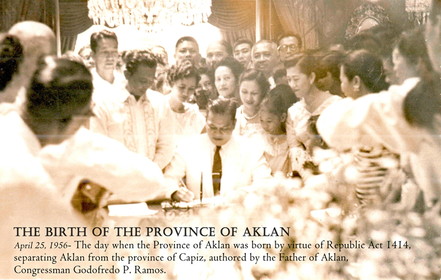

Lets find out.
The written history of Aklan, which is considered the country's oldest province, having been founded in 1213 by settlers from Borneo. Aklan's capital has moved around multiple times.
Datu Dinagandan (a chieftain of the first Bornean settlers/immigrant in the Philippines established the Minuro it Akean), relocated the capital to Batan at the end of the 14th century, which was taken in 1399 by Chinese adventurers commanded by Kalantiaw, who took over Aklan immediately. Kalantiaw III, Kalantiaw's son, established the Kalantiaw Code in 1433. Kalantiaw III was killed in a fight with Datu Manduyog, the legitimate successor of Datu Dinagandan, and so the Kalantiaw dynasty came to an end.
In 1437, when Manduyog became the new emperor, he relocated the capital to Bakan (the old name for Banga). When Miguel Lopez de Legaspi appeared in Batan in 1565, other datus replaced Manduyog. Datu Kabayag ruled Aklan from what is now the town of Libacac.
Lopez de Legaspi divided the Minuro it Akean into five encomiendas and distributed them among his followers. Mambusao, Baan, and Panay were among the encomiendas. Along with governmental developments, the Spaniards introduced Christianity, and hundreds of Aklanons were baptized in a short period of time. The towns were built in the Spanish style, with each one centered on a plaza with a church, Municipio, and school. To connect the major settlements, roads were built out of the jungle. The Minuro it Akean region was established as a province in 1716. But it was dubbed Capiz, much to the dismay of Aklanons, and the Aklanons never found peace until 1956, when Aklan became its province.
In 1896, an Aklanon Katipunan member arrived in Batan and organized Aklan for the war against Spain. Numerous municipal festivals memorialize battles commemorating this conflict, with the "Pacto de Sangre" event in New Washington being one of the most noteworthy.
The inhabitants of Aklan decided they should rule themselves after developing their own identity, which included a unique dialect. An Aklan delegation petitioned the Taft Commission, which formed the new civil administration of the nation, for secession from Capiz after the Americans conquered the country from Spain in 1901.
The petition was not denied, but it was also not granted. As an S.O.P., the Americans committed to building up a separate court of the first instance for Aklan at Batan at the appropriate moment. Simeon Mobo Reyes was named the first provincial secretary. The fight for separation, however, never stopped. The journal "Aklanon," which first appeared in 1914, lobbied for the formation of a distinct province, and Aklanons in Congress introduced much legislation to that end, including the Urquiola-Alba bill in 1920, the Laserna-Suner bills in 1925 and 1930, and the Tumbokon bill in 1934.